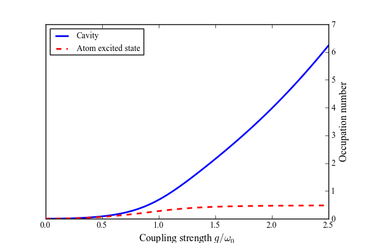
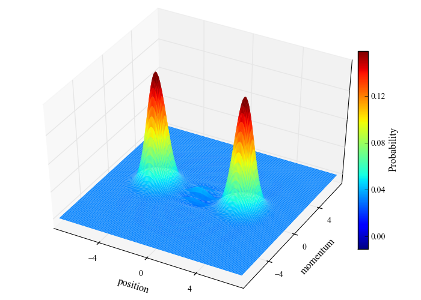

Cavity occupation number and Wigner function in the ultrastrong coupling regime¶
Groundstate properties of an ultra-strongly coupled atom-cavity system (QuTiP paper Figure 2).
from matplotlib import rcParams
rcParams['font.family'] = 'serif'
rcParams['font.serif'] = 'Times New Roman'
rcParams['legend.fontsize'] = 10
from qutip import *
from pylab import *
import time
from mpl_toolkits.mplot3d import Axes3D
from matplotlib import pyplot, mpl,cm
from matplotlib.ticker import MaxNLocator
def compute(N, wc, wa, glist, use_rwa):
# Pre-compute operators for the hamiltonian
a = tensor(destroy(N), qeye(2))
sm = tensor(qeye(N), destroy(2))
nc = a.dag() * a
na = sm.dag() * sm
idx = 0
na_expt = zeros(shape(glist))
nc_expt = zeros(shape(glist))
for g in glist:
# recalculate the hamiltonian for each value of g
if use_rwa:
H = wc * nc + wa * na + g * (a.dag() * sm + a * sm.dag())
else:
H = wc * nc + wa * na + g * (a.dag() + a) * (sm + sm.dag())
# find the groundstate of the composite system
ekets, evals = H.eigenstates()
psi_gnd = ekets[0]
na_expt[idx] = expect(na, psi_gnd)
nc_expt[idx] = expect(nc, psi_gnd)
idx += 1
return nc_expt, na_expt, ket2dm(psi_gnd)
#
# set up the calculation
#
wc = 1.0 * 2 * pi # cavity frequency
wa = 1.0 * 2 * pi # atom frequency
N = 20 # number of cavity fock states
use_rwa = False # Set to True to see that non-RWA is necessary in this regime
glist = linspace(0, 2.5, 50) * 2 * pi # coupling strength vector
start_time = time.time()
nc, na, rhoss_final = compute(N, wc, wa, glist, use_rwa)
print 'time elapsed = ' +str(time.time() - start_time)
#
# plot the cavity and atom occupation numbers as a function of
#
fig=figure(figsize=(6,4))
ax = fig.add_subplot(111)
ax2=ax.twinx()
ax2.plot(glist/(2*pi), nc,lw=2)
ax2.plot(glist/(2*pi), na,'r--',lw=2)
legend(("Cavity", "Atom excited state"),loc=0)
ax.set_xlabel(r'Coupling strength $g/\omega_{0}$',fontsize=12)
ax2.set_ylabel(r'Occupation number',fontsize=12)
for a in ax.yaxis.get_ticklines()+ax.yaxis.get_ticklabels():
a.set_visible(False)
for tick in ax.xaxis.get_major_ticks():
tick.label1.set_fontsize(10)
for tick in ax2.yaxis.get_ticklabels():
tick.set_fontsize(10)
savefig('examples-ultrastrong-1.png')
close(fig)
#
# calculate wigner function of cavity mode at final coupling strength g=2.5.
#
rho_cavity = ptrace(rhoss_final, 0)
xvec = linspace(-7.5,7.5,150)
X,Y = meshgrid(xvec, xvec)
W = wigner(rho_cavity, xvec, xvec)
fig = plt.figure(figsize=(7,5))
#
# plot the cavity wigner function.
#
ax = Axes3D(fig, azim=-61, elev=43)
surf=ax.plot_surface(X, Y, W, rstride=1, cstride=1, cmap=cm.jet, alpha=1.0, linewidth=0.0, vmax=0.15, vmin=-0.05)
ax.set_xlim3d(-7.5, 7.5)
ax.set_xlabel(r'position',fontsize=12)
ax.set_ylim3d(-7.5, 7.5)
ax.set_ylabel(r'momentum',fontsize=12)
ax.w_xaxis.set_major_locator(MaxNLocator(5))
ax.w_yaxis.set_major_locator(MaxNLocator(5))
ax.w_zaxis.set_major_locator(MaxNLocator(5))
for tick in ax.w_xaxis.get_major_ticks():
tick.label.set_fontsize(10)
for tick in ax.w_yaxis.get_major_ticks():
tick.label.set_fontsize(10)
for a in ax.axes.w_zaxis.get_ticklines()+ax.axes.w_zaxis.get_ticklabels():
a.set_visible(False)
cax,kw=mpl.colorbar.make_axes(ax,shrink=.66,pad=-.075)
nrm=mpl.colors.Normalize(W.min(),W.max())
cb1=mpl.colorbar.ColorbarBase(cax,cmap=cm.jet,norm=nrm)
cb1.set_label('Probability',fontsize=12)
cb1.set_ticks(linspace(round(W.min(),1),round(W.max(),1),6))
for t in cb1.ax.get_yticklabels():
t.set_fontsize(10)
savefig('examples-ultrastrong-2.png')
close(fig)

